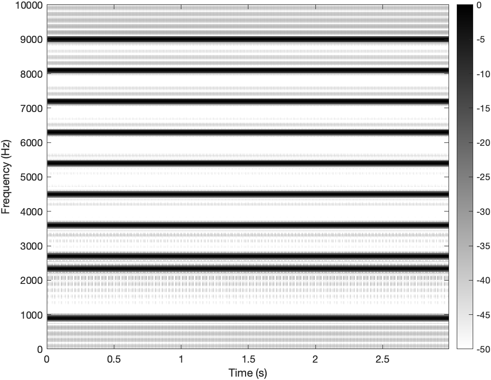

9.35 Illusion Laboratory
Spring 2021 Auditory Lab

Does the fundamental frequency of the tone and which harmonic is mistuned affect whether a mistuned complex tone is perceived as one or two acoustic events?
Our illusion is related to example illusion 3, mistuned harmonics. Since pitch discrimination is worse at higher, unresolved, harmonics, we will test the perception of mistuned harmonics of complex tones as separate acoustic events by varying the fundamental frequency of the tone and whether high or low frequency harmonics are mistuned.
We tested 2 variables: the fundamental frequency of the tone (low f0 of 200 Hz or high f0 of 900) and which harmonics are mistuned (low = 2 or high = 9).
There are four audios by varying the 2 variables:
Audio 1: Low fundamental frequency with mistuned high harmonics (200 Hz, harmonic #9).
Audio 2: Low fundamental frequency with mistuned low harmonics ( 200 Hz, harmonic #2 ).
Audio 3: High fundamental frequency with mistuned high harmonics (900 Hz, harmonic #9).
Audio 4: High fundamental frequency with mistuned low harmonics (900 Hz, harmonic #2).
We are addressing our question by testing every possible combination of two variables that could affect how a mistuned complex tone is perceived as either one or two acoustic events so we can best address the question.
Audio 1 Hypothesis: A mistuned high harmonic’s pitch will be hard to discriminate from that of a correctly tuned high harmonic and the overall tone will be perceived as one sound because high harmonics are unresolved or may span and activate multiple cochlear filters because of the mismatch between linear harmonics and nonlinear filters. .
Audio 2 Hypothesis: Mistuned low harmonics in a complex tone will be perceived as two sounds. So, our sensitivity to harmonic segregation is related to the mistuning of harmonic components.
Audio 3 Hypothesis: Mistuned harmonics with high fundamental frequencies would not be perceived as two different sounds. So, our sensitivity to harmonic segregation is related to the fundamental freq of the harmonics.
Audio 4 Hypothesis: Mistuned harmonics with high fundamental frequencies would not be perceived as two different sounds. So our sensitivity to harmonic segregation is related to the fundamental freq of the harmonics and which harmonics are mistuned.
Please use headphones to listen to the audio.
Spectrograms
Click on each spectrogram image to play sound
F0 = 200 Hz, Harmonic number 2
F0 = 200 Hz, Harmonic number 9
F0 = 900 Hz, Harmonic number 2
F0 = 900 Hz, Harmonic number 9
Normal Image
Glasberg, Brian, et al. (1986). Thresholds for hearing mistuned partials as separate tones in harmonic complexes. Acoustical Science of America. https://asa.scitation.org/doi/10.1121/1.394043.